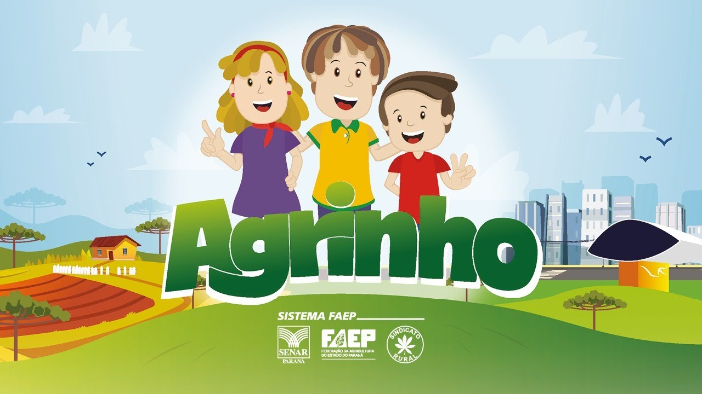

A integração entre os setores rural e urbano é uma peça-chave para o desenvolvimento sustentável das comunidades. O programa Agrinho destaca a importância dessa integração ao promover atividades educacionais que conscientizam sobre as oportunidades e desafios encontrados tanto no campo quanto na cidade. Neste artigo, exploraremos como o Agrinho está desempenhando um papel vital na construção de pontes entre esses dois mundos, capacitando indivíduos e comunidades a colherem os frutos de uma colaboração harmoniosa.
A interdependência entre áreas urbanas e rurais é evidente em diversos aspectos da vida moderna, desde o abastecimento de alimentos até a oferta de recursos naturais e a preservação ambiental. No entanto, essa interligação muitas vezes é subestimada ou negligenciada. A integração eficaz entre o campo e a cidade pode resultar em benefícios significativos, incluindo o fortalecimento da economia local, a promoção da segurança alimentar e a melhoria da qualidade de vida.
O Agrinho, programa educacional desenvolvido para alunos e professores das redes públicas de ensino, atua como um catalisador para a integração entre o campo e a cidade. Por meio de atividades educativas, o programa sensibiliza os participantes para a importância da agricultura e do meio rural, ao mesmo tempo em que destaca a relevância desses aspectos para a vida urbana. Os alunos são incentivados a compreenderem a cadeia produtiva dos alimentos, desde o plantio até o consumo, e a reconhecerem o papel dos agricultores como agentes fundamentais na sociedade.
O Agrinho promove uma série de atividades práticas e projetos interdisciplinares que aproximam os alunos das realidades tanto do campo quanto da cidade. Por exemplo, os estudantes podem visitar propriedades rurais para aprenderem sobre técnicas agrícolas sustentáveis, enquanto também são estimulados a investigar questões relacionadas à urbanização e ao planejamento urbano em suas próprias comunidades. Essas experiências proporcionam uma compreensão mais ampla e holística dos desafios e oportunidades enfrentados por diferentes áreas geográficas.
Em um mundo cada vez mais interconectado, a integração entre o campo e a cidade é essencial para a construção de sociedades mais resilientes e sustentáveis. O programa Agrinho desempenha um papel crucial ao educar e engajar alunos e professores nesse processo, capacitando-os a reconhecerem e aproveitarem as oportunidades que surgem da colaboração entre os diversos setores da economia. Ao investir na integração rural-urbana, podemos construir um futuro mais promissor para todos, onde as comunidades prosperam em harmonia com o meio ambiente e uns com os outros.